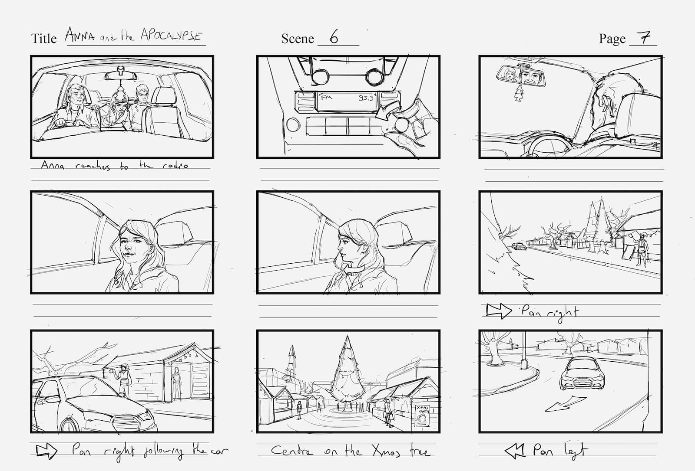

Erster Schultag
TestAm ersten Tag haben wir uns Gedanken darüber gemacht, was eigentlich eine Erzählung ist. Wo begegnen wir Geschichten und Erzählungen und wie werden sie vermittelt? Um uns gegenseitig kennen zu lernen, haben wir auf spielerische Weise Geschichten über uns erzählt. Wir mussten uns ins Internet hochladen mit Name, Bild und kurzer Beschreibung. Sprich wir haben unseren Namen und Kurzbeschrieb auf einen Zettel geschrieben und uns damit vor die Klasse gesetzt. Die Klasse musste in kleinen Gruppen Theorien zum Beschrieb aufstellen. Der Kreativität war freien Lauf gesetzt und die skurrilsten Geschichten sind entstanden. Derjenige im Internet hatte keine Chance sich zu wehren, bis er am Schluss die Auflösung präsentierte.
Die menschliche Kamera
- Jeder spielt einmal Kameramann und einmal Kamera, Fotos werden mit den Augen und dem Gedächnis geschossen.
- Die Fotos werden grob auf ein Dia skizziert und durch weitere Dias aus der Gruppe ergänzt.
- Zu jedem Dia wird ein Satz geschrieben, so dass eine Story entsteht.
- Die Dias werden mit einer anderen Gruppe ausgetauscht, welche ebenfalls eine Story dazu schreibt.
- Die Stories werden verglichen.

Eine Geschichte mit einem Wort
- Klasse sitzt in einem Kreis, der Reihe nach sagt jeder ein Wort um einen Satz zu bilden.
- Beispiel Nr. 1 sagt «Ich», Nr. 2 sagt «bin». Das ergibt den Satzanfang «Ich bin…».
- Die letzte Person muss den Satz abschliessen.
- Die Sätze müssen einen Sinn ergeben
Unsere Sätze:
Ich bin auf der Hut, weil ich keine Zeit für wichtige Dinge heute habe.
Olga hat eine grosse Wut seit vielen Tagen und Wochen, doch denkt sie nichts.
Als Max der Underwiederstehliche ging, kam Peter vorbei und dachte eine grosse, unglaubliche Idee.
Unser Projekt
Wenn man Kinder fragt, was sie gerne essen oder sogar selber kochen möchten, erhält man immer in etwa die gleichen Antworten – Chicken Nuggets, Spaghetti oder Pizza. Die App «Food 4 Seasons» soll Kinder auf eine experimentelle und spielerische Weise die Welt des Kochens aufzeigen und sie auf den Geschmack von vielen verschiedenen Gerichten bringen. Durch die Auswahl einer Jahreszeit tauch der/die LeserIn in eine mitreissende Geschichte ein und kann dessen Ausgang mit eigenen Entscheidungen aktiv beeinflussen. Am Ende der Geschichte erhält das Kind ein Rezept, das es gemeinsam mit einem Elternteil oder einem Erwachsenen nach kochen kann. Es war uns ein Anliegen, die App so zu gestalten und zu konzipieren, dass sie das Interesse von Kindern im Alter von 6–11 Jahren weckt. Beim Design haben wir darauf geachtet, dass das visuelle Erscheinungsbild im Kern zwar bei allen vier Geschichten gleich ist, jedoch die einzelnen Jahreszeiten farblich angepasst und individualisiert werden können (Icons, Illustrationen, Farben). Die User-Journey sollte einfach und verständlich sein. Nach ca. 3–5 Schritten («Verästelungszweige») erhält der Benutzer in allen vier Geschichten das Rezept.
Game Design
Anhand von Zeitungsartikel sollten wir ein Spiel entwickeln. Aus einer Auswahl von mehreren Zeitungsartikeln, suchten wir uns einen aus und überlegten uns eine Spielidee. Wir hatten kurz Zeit unsere Idee zu skizzieren und präsentierten sie anschliessend der Klasse, anhand eines Elevator-Pitches. Die Idee davon ist, dass man eine Fahrstuhlfahrt Zeit hat eine Vision zu erläutern, wenn man nicht überzeugt, ist der Pitch zu Ende.
Unser Spiel
Zu unserem Zeitungsartikel entwarfen wir ein Candy Game. Ziel des Spiels ist es, so viele Süssigkeiten wie möglich mit dem Einkaufswagen einzufangen. Der Gegner sind die Mütter im Laden. Wenn man sie mit dem Einkaufswagen trifft, erwischen sie dich und du musst wieder von vorne beginnen. Du hast 1 Minute Zeit um so viele Süssigkeiten wie möglich zu fangen. Wenn du es innerhalb dieser Zeit aus dem Laden schaffst, hast du gewonnen.


Storyboard
Ein Storyboard bzw. Szenenbuch ist eine zeichnerische Version eines Drehbuchs oder eine Visualisierung eines Konzeptes oder einer Idee. Wir haben uns verschiedene Storyboards angesehen und die dazugehörigen Filmeausschnitte. Je nach Film wurden die Storyboards unterschiedlich genau gezeichnet.
Helden
Wenn man eine Geschichte schreibt, kommen jeweils ein oder mehrere Charaktere vor. Unter dem Charakter eines Menschen versteht man dessen auffällige Verhaltensgewohnheiten oder auch sein Temeprament, welche die Voraussetzungen für ein moralisches Verhalten bilden. Der Charakter ist daher einer der wichtigsten zu definierenden Punkte einer Person in einer Geschichte. Als Übung haben wir diese wichtigen Punkte beachtet:
Mit diesen Merkmalen kann man einen Charakter individuell ganz gut beschreiben. In Gruppen haben wir unsere eigenen Superhelden jeweils einmal gezeichnet und einmal beschrieben. Danach haben wir den Beschrieb und die Zeichnung an je zwei andere Gruppen weitergegeben und diese mussten mit einer der beiden Vorlagen die andere ergänzen. Wenn sie die Zeichnung erhalten haben, mussten sie den Beschrieb ausfüllen und wenn sie den Beschrieb erhalten haben, mussten sie den Helden zeichnen. Die Ergebnisse waren oft erstaunlich nahe am original dran. Wenn jedoch einzelne Informationen nicht gezeichnet wurden oder nicht im Beschrieb waren, war es oft schwer herauszufinden, was sich die Ersteller dabei gedacht haben. Die Interpretationen gingen somit in unterschiedliche Richtungen. Die Gruppen waren ausserdem sehr kreativ beim Ergänzen der verschiedenen Vorlagen, was im nachhinein bei der Besprechung zu witzigen Momenten führte.